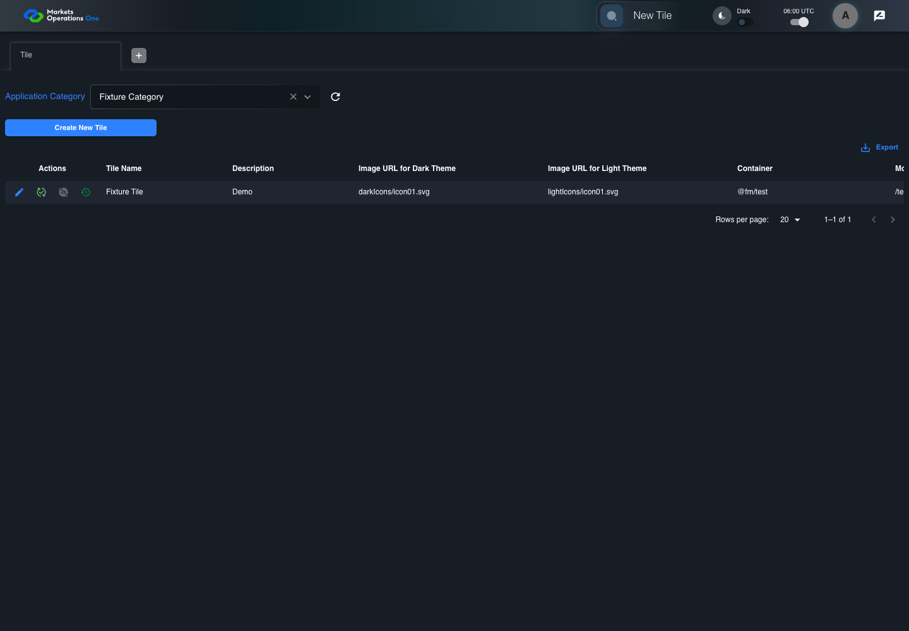
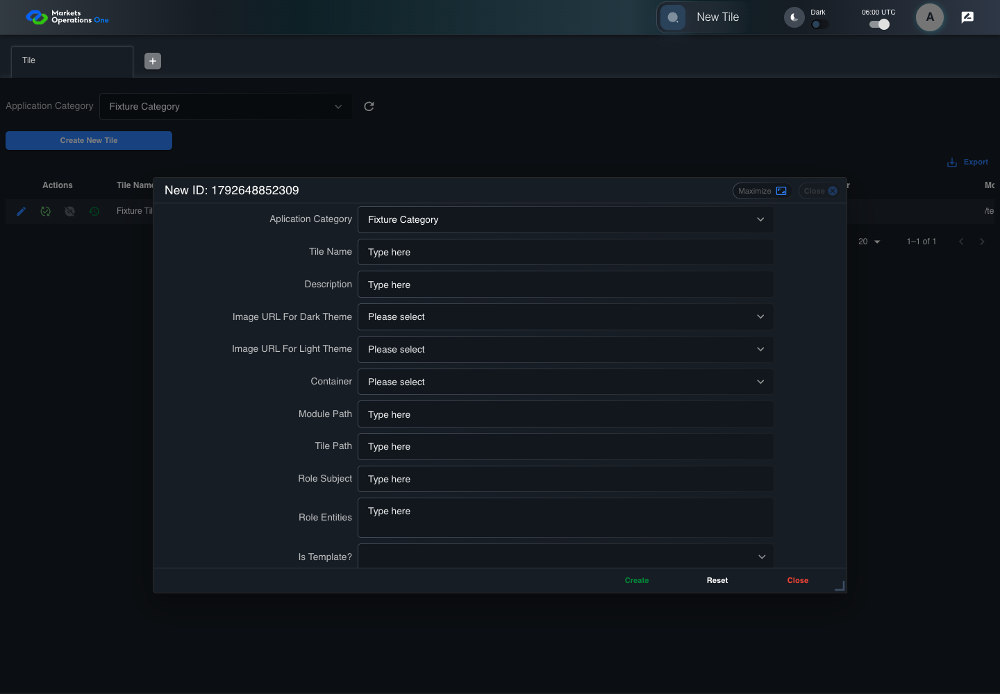

UI-ADM-SEL-008 actual administration UI with step evidence
PASS · application/run-050/ui-adm-sel-008-actual-administration-ui-with-step-evidence-0b45d0656af5-attempt-1 · ACTUAL_APPLICATION_LOCAL_SERVICES
Actual current React administration screens. Controlled browser login supplies UI-ADMIN-01 and TEST_OWNER, or the declared SUPER_USER. Controlled BFF routes return the case-declared records. Other controlled saves persist submitted field values. This run establishes frontend handling only. It does not execute BFF validation, storage, audit generation, or authorization.
2026-10-22T06:00:49.513Z to 2026-10-22T06:00:53.632Z
Assertions and result · Artifact manifest · Exact run inputs and source hashes
Result SHA-256:87e177cba37bcb27a382be8b44e4e4c5d53d15e5ccd2f4935b4d30998377ab0cMachine observations
- new-record-source-identity.json
69c37483361f5abaefbdd7c4525adde103e8a808fdf6c647a4fbfa91a645a66f - ui-origin-admin-requests.json
4c27b540a04f3823aa695d7e7b36c039b73b5e38d39782c7e5590a660401697f
Screenshot capture: CAPTURED. Named frames: 5.
Step screenshot bindings: COMPLETE. 4/4 canonical steps have execution screenshots.
Bindings measure structural coverage only. They do not establish screenshot content quality or relevance.
Screenshot content review: NOT_REVIEWED. Recorded context: 0/5 frames. Identical image bytes: 0 repeated frames. Recorded context does not establish human visual review.
Canonical step timeline
Given Admin A is authenticated as fixture UI-ADMIN-01 with the case-specific permissions
Execution: PASSED.
1. step-01 Visible state after step 1: Given Admin A is authenticated as fixture UI-ADMIN-01 with the case-specific permissions
2026-10-22T06:00:51.114Z · 1440×1000
Step: /Users/lushevol/code/github/ratan-release-impact/workbench/tasks/ui-test-coverage-20261022/test-cases.md:9583
SHA-256:5b18e61c9d4c5c1f0cee1300bdcda34b1418a25c1a97509d35e55f2dac5d5abcAnd Fixture Category is selected
Execution: PASSED.
2. step-02 Visible state after step 2: And Fixture Category is selected
2026-10-22T06:00:52.275Z · 1440×1000
Step: /Users/lushevol/code/github/ratan-release-impact/workbench/tasks/ui-test-coverage-20261022/test-cases.md:9584
SHA-256:962e352de8f594547f7682d402b60f979529333c52d5b925f82c36d2dab5d3deWhen Admin A clicks button named "Create New Tile" inside the "Tile" administration tabpanel
Execution: PASSED.
3. step-03 Visible state after step 3: When Admin A clicks button named "Create New Tile" inside the "Tile" administration tabpanel
2026-10-22T06:00:52.881Z · 1440×1000
Step: /Users/lushevol/code/github/ratan-release-impact/workbench/tasks/ui-test-coverage-20261022/test-cases.md:9585
SHA-256:7f3fa4969f9ee26979742f6c513e65a62b2db29fc889961369af46a1d4715ab3Then combobox named "Aplication Category" inside the new-record dialog inside the "Tile" administration tabpanel has value "Fixture Category"
Execution: PASSED.4. step-04 Visible state after step 4: Then combobox named "Aplication Category" inside the new-record dialog inside the "Tile" administration tabpanel has value "Fixture Category"
2026-10-22T06:00:53.015Z · 1440×1000
Step: /Users/lushevol/code/github/ratan-release-impact/workbench/tasks/ui-test-coverage-20261022/test-cases.md:9586
SHA-256:fc25bac0223bf4f908a6f33b70e41df65503bb10eba138e728037f51c52b6d98


Additional named frames

Screenshots establish visible state only. Assertions and traces support functional claims.